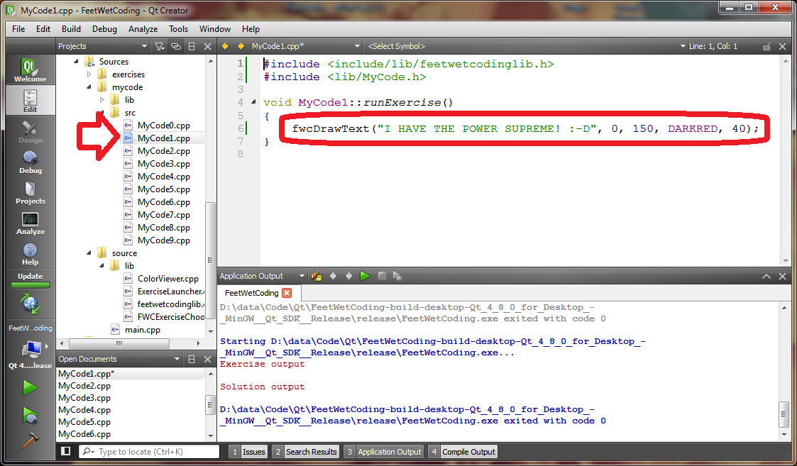
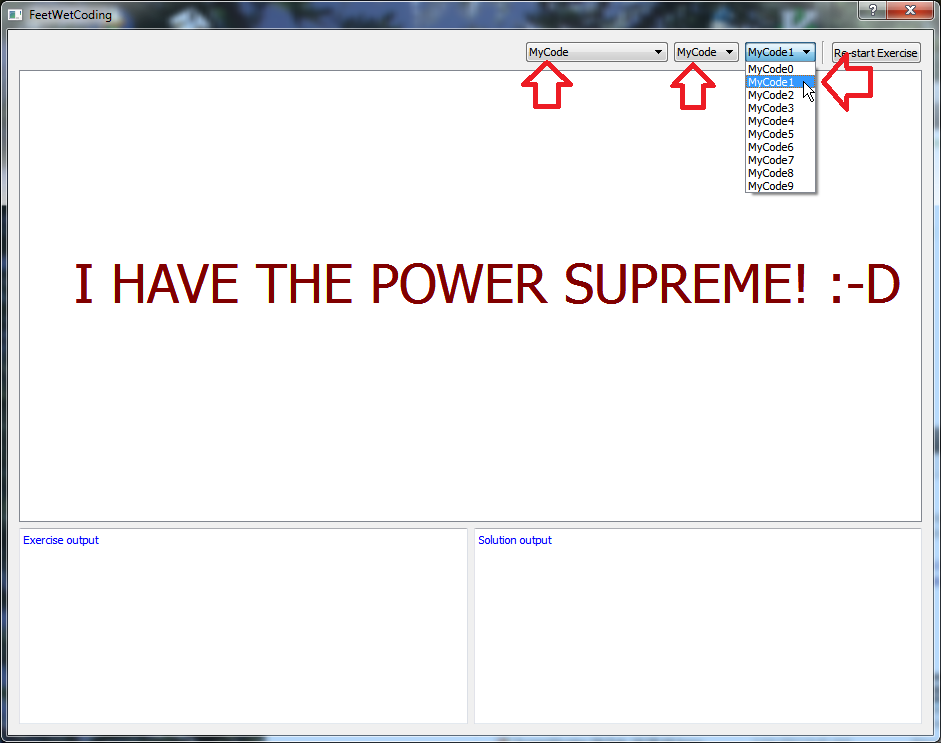

Make C++ Your Own In FWC With MyCode!
Make C++ Your Own In FWC With MyCode!
The MyCode work area in FeetWetCoding is a very useful way for you to:
● Write your own programs outside of the exercise structure.
● Test out an idea or language feature without stepping all over existing exercise code, or having to comment that exercise code out.
● A handy place to keep a bunch of functions that you find useful and want to reuse again and again as you learn, by cutting and pasting from your personal MyCode library of functions and classes that you will write over time.
If you are new to C++, you will need to have done some exercises before this MyCode thing will make any sense to you. Once you hit Section05 "Loops_Logic", you may begin to want to start writing your own programs from scratch, and we strongly encourage you to do that! So if you read this page and it doesn't make any sense, don't worry about that. Just keep working exercises, and come back here after you have done some of the Loops_Logic exercises, and check this info out again then.
The MyCode "work area" is just a set of empty source files that live under the fwc home directory--wherever you unzipped the fwc .zip file you originally downloaded when you were getting started with fwc.
MyCode consists of the following files:
● mycode/src/MyCode0.cpp
● mycode/src/MyCode1.cpp
● mycode/src/MyCode2.cpp
● mycode/src/MyCode3.cpp
● mycode/src/MyCode4.cpp
● mycode/src/MyCode5.cpp
● mycode/src/MyCode6.cpp
● mycode/src/MyCode7.cpp
● mycode/src/MyCode8.cpp
● mycode/src/MyCode9.cpp
...as well as the files under mycode/include. You will learn what "includes" are in Section00 SOME FUTURE SECTION. (DEVNOTE: SEE GOOGLE CODE ISSUE #74).
The way you run specific exercise code is to select that exercise at runtime from the dropdown list buttons on the fwc window for Chapter, Section and Exercise. The MyCode "chapter" can be selected from the Chapter dropdown list on the fwc window.
fwc is setup this way to make it easy to choose a specific exercise at runtime, but this means that adding a new program or exercise to these dropdown lists on the fwc window is just not something a beginning programmer will be able to do until they have more coding experience. And yet, beginners need to be able to write their own programs to test out new ideas!
One of the best ways to learn programming is not just to do the exercises we give you, but also to go off and try things on your own.
One way you could do this is to write your program idea by overwriting the source files for exercises that you have already completed. But then you have to remember that your asteroid game project really lives in C01S02/010_ChangeText.cpp or whatever, and that's sort of irritating to have to remember that. So let's not do it that way.
Instead, just use the MyCode source files that already exist. They start off almost empty, so you can fill them up with whatever you want.
MyCode gives you a place for your programs. Think up your own ideas of what you can do with the tools you are learning. Try new things out. Don't be afraid to experiment. The MyCode work area gives you ten C++ files to do that in. If you use up all ten, just copy the MyCodeX.cpp file you have been using the least to another directory where you can keep permanent copies of the software you write. Then you can use that MyCodeX.cpp slot for a new program idea.
Again, if you have not yet completed at least the Section05 Loops_Logic exercises, you will probably not have much use for this MyCode thing.
Here is an example of how to use MyCode:
Type the code in the red circle into MyCode1.cpp and run fwc:

...then choose MyCode1 in the FWC application:

GOOD ENGINEERS KEEP THEIR TOOLS CLEAN AND ORDERLY!
We all let our filesystems get messy and disorganized, with files and folders and images and crap all over the place in a big mess. I do it, you've done it--it happens.
But something that will save your bacon as you are learning coding is to man up or woman up and do the tedious housekeeping chores you need to do to keep your files well-organized. Try to build up the habit in yourself of going through your files and directories once a week (or at LEAST once a month!) and clean out the crap. Think about what you have named things. Do the names make sense? Are they clear and descriptive? Do they make sense only to you, or will they make sense to others? Choosing good names for things is important not just in coding, but in any computer work.
Pick a date scheme for filenames, and try to stick with it. Over the years I have come to use dates in the form of 2012Mar19, and I use that in my filenames, where dates are important. For example the zip file I created for this documentation (to put it up on our website) is named
● fwcdocsV0.2r1-2012Mar19.zip
...that tells me that the file is:
● ...a .zip file
● it contains the FeetWetCoding documentation (fwcdocs)
● ...for version 0.2 release 1
● and I zipped the docs up on 2012Mar19, or March 19, 2012
Why put the date in the filename when the file already has a date associated with it (that the Operating System remembers)? Because that date can get lost. I might copy a file without a date in the filename at some time in the future, and start using the copy, and the original date will be gone. I don't always add a date to every filename I create, but for some of them, it is important.
However, you can't really go wrong putting dates on everything, and you never know when it will turn out to be immensely valuable. Put the date in code you write, documentation you make and PUT THE DATE OF AUTHORSHIP ON EVERY FRICKIN WEBPAGE YOU EVER MAKE!!!! Put dates everywhere!!! :-D
Also, get out of the habit of using spaces in your filenames! Many windows users do this. As a programmer, you will soon learn that this causes you problems. It's a good habit to break. Instead of filenames, you can use the dash character - or the underscore _ which will break up the words in the name so they are more readable, and yet not use spaces which makes working with files in your programming a pain.
documentation generated by HelpNDoc 3/26/2012 11:00 AM
FeetWetCoding version 0.2.2 released 2012Mar24 copyright (c) 2011,2012 Robert Holder, Janice Dugger.
...click the ZIP button on our Github page for the latest source!
Created with the Personal Edition of HelpNDoc: Full featured multi-format Help generator